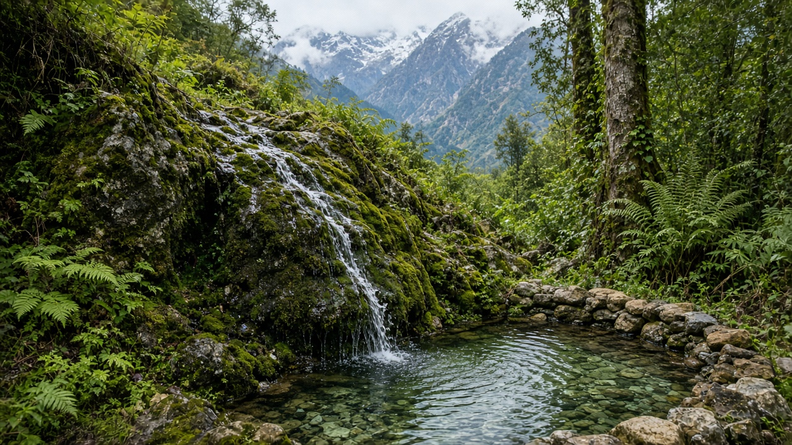
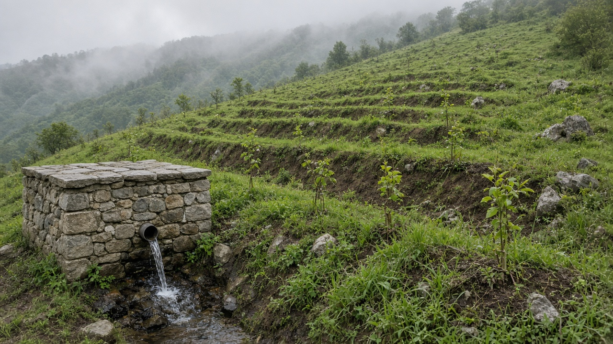
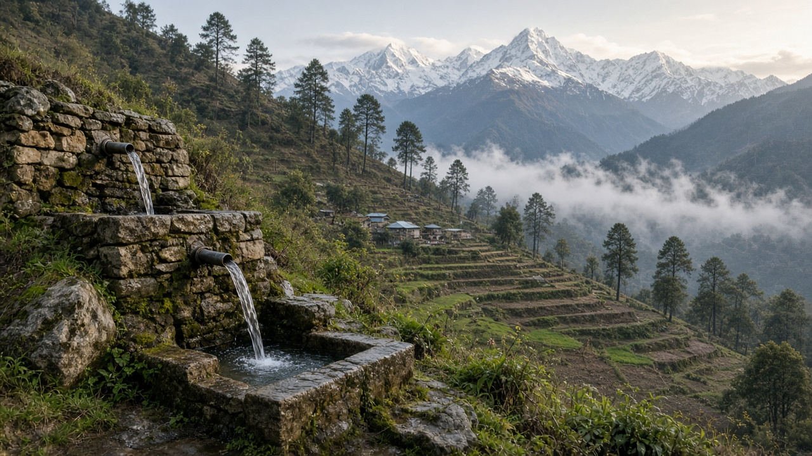

Spring Revival and Mountain Water Sources
Published on August 10, 2026

Mountain springs are among the most important freshwater sources for rural communities in the Himalayas and other highland regions. These natural outlets occur where groundwater intersects the land surface, often providing reliable water throughout the year when surface streams fluctuate seasonally. However, springs across Nepal and neighboring countries are drying up or declining in discharge due to a combination of land-use change, deforestation, road construction, climate shifts, and unregulated extraction. Spring revival programs aim to restore the hydrological conditions that feed these sources by protecting recharge areas, reducing erosion, and managing demand in the surrounding catchment.
Effective spring revival begins with hydrogeological assessment to identify the recharge zone—the uphill area where rainfall infiltrates and travels underground to emerge at the spring eye. Activities in this zone may include planting native vegetation, building contour trenches, restricting quarrying and unplanned construction, and controlling grazing that compacts soil and reduces infiltration. At the spring outlet itself, protection structures such as stone masonry boxes, sediment traps, and piped distribution systems prevent contamination and ensure water reaches households cleanly. Community participation is essential because local users often have generational knowledge of seasonal spring behavior and are best positioned to enforce protective rules.
Spring revival connects directly to broader mountain water security and climate adaptation strategies. As glacier melt patterns change and monsoon timing becomes less predictable, springs that depend on subsurface storage become even more valuable as stable water sources. Mapping springs at scale, monitoring discharge trends, and integrating spring management into local government water plans can help prioritize the most vulnerable sources before they fail entirely. By investing in the health of mountain water systems today, communities protect a lifeline that supports drinking water, sanitation, small-scale irrigation, and ecosystem integrity across some of the most challenging terrains on Earth.

पहाडी मुहानहरू हिमालय र अन्य उच्च भू-भागका ग्रामीण समुदायहरूका लागि सबैभन्दा महत्त्वपूर्ण मिठो पानीका स्रोतहरूमध्ये हुन्। यी प्राकृतिक निकासहरू भू-जल भू-पृष्ठसँग भेटिने स्थानमा हुन्छन्, र प्रायः सतहका खोलाहरू मौसमी रूपमा उतार-चढाव हुँदा वर्षभर विश्वसनीय पानी दिन्छन्। तर, नेपाल र छिमेकी देशहरूका मुहानहरू भू-उपयोग परिवर्तन, वन विनाश, सडक निर्माण, जलवायु परिवर्तन, र अनियमित दोहनका कारण सुक्दै वा प्रवाह घट्दै छन्। मुहान पुनर्जीवन कार्यक्रमहरूले पुनःभरण क्षेत्र संरक्षण, क्षरण कम गर्न, र वरपरको जल संग्रह क्षेत्रमा माग व्यवस्थापन गरेर यी स्रोतहरूलाई पोषण दिने जलवैज्ञानिक अवस्था पुनर्स्थापना गर्ने लक्ष्य राख्छन्।
प्रभावकारी मुहान पुनर्जीवन जलभूवैज्ञानिक मूल्यांकणबाट सुरु हुन्छ, जसले पुनःभरण क्षेत्र—माथिल्लो भाग जहाँ वर्षाको पानी समाहन भएर भू-गर्भबाट यात्रा गरी मुहानको मुखमा निस्कन्छ—पहिचान गर्छ। यस क्षेत्रमा देशी वनस्पति रोप्ने, समोच्च रेखा खाडल बनाउने, ढुंगा खानी र अनियोजित निर्माण रोक्ने, र माटो किच्ने चराई नियन्त्रण गर्ने जस्ता क्रियाकलापहरू समावेश हुन सक्छन्। मुहानको निकासमा ढुंगाको संरक्षण बाकस, तलउकास पकड्ने संरचना, र पाइप वितरण प्रणाली जस्ता संरक्षण संरचनाले प्रदूषण रोक्छ र पानी स्वच्छ रूपमा घरपरिवारसम्म पुग्छ। स्थानीय प्रयोगकर्ताहरूसँग प्रायः मौसमी मुहान व्यवहारको पुस्तौंदर ज्ञान हुन्छ र संरक्षण नियम लागू गर्न उनीहरू सबैभन्दा उपयुक्त हुनाले सामुदायिक सहभागिता अत्यावश्यक छ।
मुहान पुनर्जीवन सीधै व्यापक पहाडी पानी सुरक्षा र जलवायु अनुकूलन रणनीतिसँग जोडिएको छ। हिम पग्लनेको ढाँचा परिवर्तन हुँदै गए र मनसुनको समय कम अनुमानयोग्य हुँदै गएका बेला, भू-गर्भ भण्डारणमा निर्भर मुहानहरू स्थिर पानी स्रोतका रूपमा अझ मूल्यवान हुन्छन्। ठूलो स्तरमा मुहान नक्सांकन, प्रवाह प्रवृत्ति निगरानी, र स्थानीय सरकारको पानी योजनामा मुहान व्यवस्थापन एकीकरण गर्दा सबैभन्दा कमजोर स्रोतहरू पूर्ण रूपमा असफल हुनु अघि प्राथमिकता दिन मद्दत गर्छ। आज पहाडी पानी प्रणालीको स्वास्थ्यमा लगानी गरेर, समुदायहरूले पिउने पानी, स्वच्छता, सानो सिंचाइ, र पारिस्थितिकी अखण्डतालाई समर्थन गर्ने जीवनरेखा संरक्षण गर्छन्, पृथ्वीका सबैभन्दा चुनौतीपूर्ण भू-भागहरूमा।

पहाडी झरने हिमालय और अन्य उच्च भूमि क्षेत्रों के ग्रामीण समुदायों के लिए सबसे महत्वपूर्ण मीठे पानी के स्रोतों में से हैं। ये प्राकृतिक निकास वहाँ होते हैं जहाँ भूजल भू-सतह से मिलता है, और अक्सर सतह की नदियों के मौसमी उतार-चढ़ाव के बीच वर्षभर विश्वसनीय पानी प्रदान करते हैं। हालांकि, नेपाल और पड़ोसी देशों के झरने भू-उपयोग परिवर्तन, वन विनाश, सड़क निर्माण, जलवायु परिवर्तन, और अनियमित निकासी के कारण सूख रहे हैं या उनका प्रवाह घट रहा है। झरना पुनर्जीवन कार्यक्रम पुनःभरण क्षेत्रों की रक्षा, कटाव कम करने, और आसपास के जल संग्रह क्षेत्र में मांग प्रबंधन करके इन स्रोतों को पोषण देने वाली जलवैज्ञानिक स्थितियों को बहाल करने का लक्ष्य रखते हैं।
प्रभावी झरना पुनर्जीवन जलभूवैज्ञानिक मूल्यांकन से शुरू होता है, जो पुनःभरण क्षेत्र की पहचान करता है—ऊपरी क्षेत्र जहाँ वर्षा का पानी समाहित होकर भूमि के नीचे से होते हुए झरने के मुख में निकलता है। इस क्षेत्र में देशी वनस्पति लगाना, समोच्च रेखा खाइ बनाना, खदान और अनियोजित निर्माण प्रतिबंधित करना, और मिट्टी को दबाने वाले चराई को नियंत्रित करना जैसी गतिविधियाँ शामिल हो सकती हैं। झरने के निकास पर पत्थर का संरक्षण बक्स, तलछट पकड़ने की संरचनाएँ, और पाइप वितरण प्रणाली जैसी संरक्षण संरचनाएँ प्रदूषण रोकती हैं और पानी स्वच्छ रूप से घरों तक पहुँचती है। स्थानीय उपयोगकर्ताओं के पास अक्सर मौसमी झरने व्यवहार का पीढ़ी दर पीढ़ी ज्ञान होता है और वे संरक्षण नियम लागू करने के लिए सबसे उपयुक्त होते हैं, इसलिए सामुदायिक भागीदारी आवश्यक है।
झरना पुनर्जीवन सीधे व्यापक पर्वतीय जल सुरक्षा और जलवायु अनुकूलन रणनीतियों से जुड़ा है। जैसे-जैसे हिम पग्लने के पैटर्न बदल रहे हैं और मानसून का समय कम अनुमानयोग्य हो रहा है, भू-गर्भ भंडारण पर निर्भर झरने स्थिर जल स्रोतों के रूप में और भी मूल्यवान हो जाते हैं। बड़े पैमाने पर झरनों का नक्सांकन, प्रवाह प्रवृत्तियों की निगरानी, और स्थानीय सरकार की जल योजनाओं में झरना प्रबंधन का एकीकरण सबसे कमजोर स्रोतों को पूर्ण रूप से विफल होने से पहले प्राथमिकता देने में मदद कर सकता है। आज पर्वतीय जल प्रणालियों के स्वास्थ्य में निवेश करके, समुदाय पृथ्वी के सबसे चुनौतीपूर्ण भू-भागों में पीने का पानी, स्वच्छता, छोटे पैमाने की सिंचाई, और पारिस्थितिक अखंडता का समर्थन करने वाली जीवनरेखा की रक्षा करते हैं।